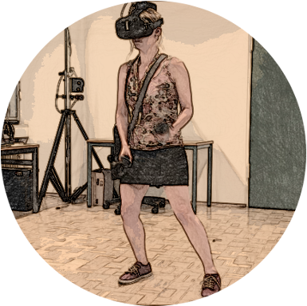

Key Research Interests

Virtual Reality and Embodiment. One key research interest of mine focuses on exploring perceptions of embodiment in virtual reality (VR) experiences, mixed-reality games, or exergames. I am especially interested in how realism (in particular, different dimensions thereof) affect, augment, or constrain user and player experience - in digital technologies and games in general, but particularly in VR, where many questions remain regarding how this interacts with presence and immersion. This research interest also overlaps with my second key research interest, as the medium of display can affect how users and players experience audio.
Audio and Game Audio. Audio is often overshadowed by visual factors in research and development, even though it can significantly affect users’ perceptions and experience, and has important funtions for feedback in human-computer and player-game interaction. In games, this modality is even more complex and varied. In my research, I have explored effects of music presence and specific music attributes on player experience, affective state, and wellbeing; the varying functions of music and sound effects for player experience in different contexts; as well how the functionality of game audio differs with its positioning within the diegesis.
Publications
Some PDFs are linked; for the others, feel free to reach out to me on or via .
2020
- Katja Rogers. Realism in Player Experience - Exploring Game Interaction, Narrative, and Audio. PhD thesis (Dr.rer.nat.) at Ulm University.
- Katja Rogers, Maximilian Milo, Michael Weber, Lennart E. Nacke. The Potential Disconnect between Time Perception and Immersion: Effects of Music on VR Player Experience. In Proceedings of the Annual Symposium on Computer-Human Interaction in Play (CHI PLAY ‘20). ACM, New York, NY, USA. doi: 10.1145/3410404.3414246
- Giovanni Ribeiro, Katja Rogers, Maximilian Altmeyer, Thomas Terkildsen, Lennart E. Nacke. Game Atmosphere: Effects of Audiovisual Thematic Cohesion on Player Experience and Psychophysiology. In Proceedings of the Annual Symposium on Computer-Human Interaction in Play (CHI PLAY ‘20). ACM, New York, NY, USA. doi: 10.1145/3410404.3414245
- Anna Lisa Martin-Niedecken, Andrea Mahrer, Katja Rogers, Eling D de Bruin, and Alexandra Schättin. “HIIT” the ExerCube: Comparing the Effectiveness Of Functional High-Intensity Interval Training in Conventional vs. Exergame-Based Training. In Frontiers in Computer Science: Games and Play in HCI. doi: 10.3389/fcomp.2020.00033
- Dennis Wolf, Katja Rogers, Christoph Kunder, and Michael Weber. JumpVR: Jump-Based Locomotion Augmentation for Virtual Reality. In Proceedings of the 2020 CHI Conference on Human Factors in Computing Systems (CHI’20). ACM, New York, NY, USA. doi: 10.1145/3313831.3376243
2019
- Katja Rogers and Michael Weber. Audio Habits and Motivations in Video Game Players. In Proceedings of the 14th International Audio Mostly Conference (AM’19). ACM, New York, NY, USA. doi: 10.1145/3356590.3356599
- Katja Rogers, Matthias Jörg, and Michael Weber. Effects of Background Music on Risk-Taking and General Player Experience. In Proceedings of the Annual Symposium on Computer-Human Interaction in Play (CHI PLAY ’19). ACM, New York, NY, USA. doi: 10.1145/3311350.3347158
- Anna-Lisa Martin Niedecken, Elena Márquez Segura, Katja Rogers, Stephan Niedecken, and Laia Turmo Vidal. Towards Socially Immersive Fitness Games: An Exploratory Evaluation Through Embodied Sketching. In Extended Abstracts of the Annual Symposium on Computer-Human Interaction in Play Companion Extended Abstracts (CHI PLAY ’19 Extended Abstracts). ACM, New York, NY, USA. doi: 10.1145/3341215.3356293
- Julian Frommel, Dietmar Puschmann, Katja Rogers, and Michael Weber. Take Back Control: Effects of Player Influence on Procedural Level Generation. In Extended Abstracts of the Annual Symposium on Computer-Human Interaction in Play Companion Extended Abstracts (CHI PLAY ’19 Extended Abstracts). ACM, New York, NY, USA. doi: 10.1145/3341215.3356288
- Katja Rogers, Jana Funke, Julian Frommel, Sven Stamm, and Michael Weber. Exploring Interaction Fidelity in Virtual Reality: Object Manipulation and Whole-Body Movements. In Proceedings of the 2019 CHI Conference on Human Factors in Computing Systems (CHI’19). ACM, New York, NY, USA. doi: 10.1145/3290605.3300644
- Anna-Lisa Martin Niedecken, Katja Rogers, Laia Turmo Vidal, Eliza D. Mekler, and Elena Márquez Segura. ExerCube vs. Personal Trainer: Evaluating a Holistic, Immersive, and Adaptive Fitness Game Setup. In Proceedings of the 2019 CHI Conference on Human Factors in Computing Systems (CHI’19). ACM, New York, NY, USA. doi: 10.1145/3290605.3300318
- Julian Frommel, Jan Gugenheimer, and Katja Rogers. Opportunities and Challenges of Using Game Video Stream Data for Games Research. Position Paper for All the (World Wide) Web’s A Stage: A CHI ’19 Workshop on Live Streaming.
- Katja Rogers. Designing for Digital Wellbeing: On Games and Music. Position Paper for Designing for Digital Wellbeing: A CHI ‘19 Workshop.
2018
- Julian Frommel, Fabian Fischbach, Katja Rogers and Michael Weber. Emotion-based Dynamic Difficulty Adjustment Using Parametrized Difficulty and Self-Reports of Emotion. In Proceedings of the 2018 Annual Symposium on Computer-Human Interaction in Play (CHI PLAY ’18). ACM, New York, NY, USA. doi: 10.1145/3242671.3242682
- Katja Rogers, Maria Aufheimer, Michael Weber, and Lennart E. Nacke. Exploring the Role of Non-Player Characters and Gender in Player Identification. In Proceedings of the 2018 Annual Symposium on Computer-Human Interaction in Play Companion Extended Abstracts (CHI PLAY ’18 Extended Abstracts; Spotlight Paper). ACM, New York, NY, USA. doi: 10.1145/3270316.3273041
- Katja Rogers. Leveraging Background Game Audio for Wellbeing. Forum on Video Games for Mental Health. A CHI Play ’ 18 Workshop, Melbourne, Australia, 2018.
- Katja Rogers, Giovanni Ribeiro, Rina R. Wehbe, Michael Weber, and Lennart E. Nacke. Vanishing Importance: Studying Immersive Effects of Game Audio Perception on Player Experiences in Virtual Reality. In Proceedings of the 2018 CHI Conference on Human on Human Factors in Computing Systems (CHI ’18). ACM, New York, NY, USA. doi: 10.1145/3173574.3173902
- Katja Rogers, Mark Colley, David Lehr, Julian Frommel, Marcel Walch, Lennart E. Nacke, and Michael Weber. KickAR: Exploring Game Balancing Through Boosts and Handicaps in Augmented Reality Table Football. In Proceedings of the 2018 CHI Conference Factors in Computing Systems (CHI ’18). ACM, New York, NY, USA. doi: 10.1145/3173574.3173740
- Katja Rogers, Michael Olah, and Michael Weber. Textile Manager: Design and Development of a Persuasive Game about Sustainable Textile Production. In Extended Abstracts of the 2018 CHI Conference on Human Factors in Computing Systems (CHI EA ’18). ACM, New York, NY, USA. doi: 10.1145/3170427.3188623
- Katja Rogers, Maria Aufheimer, Michael Weber, and Lennart Nacke. Towards The Visual Design of Non-Player Characters for Narrative Roles. In Proceedings of the 44th Graphics Interface Conference (GI ‘18). Canadian Human-Computer Communications Society, Waterloo, Canada. doi: 10.20380/GI2018.21
- Katja Rogers and Michael Weber. 2018. Shock Tactics: Perceived Controversy in Molleindustria Persuasive Games. In Persuasive Technology (pp. 193-199). PERSUASIVE 2018. Lecture Notes in Computer Science, vol 10809. Springer, Cham, Switzerland. doi: 10.1007/978-3-319-78978-1_16
2017
- Katja Rogers and Lennart Nacke. Exploring the Potential of Game Audio for Wellbeing. Position Paper in Positive Gaming – Workshop on Gamification and Games for Wellbeing: A CHI Play ’17 Workshop.
- Katja Rogers. Exploring the Role of Audio in Games. In Extended Abstracts Publication of the Annual Symposium on Computer-Human Interaction in Play (CHI PLAY ’17 Extended Abstracts). ACM, New York, NY, USA. doi: 10.1145/3130859.3133227
- Marcel Walch, Julian Frommel, Katja Rogers, Felix Schüssel, Philipp Hock, David Dobbelstein, and Michael Weber. Evaluating VR Driving Simulation from a Player Experience Perspective. In Proceedings of the 2017 CHI Conference Extended Abstracts on Human Factors in Computing Systems (CHI EA ‘17). ACM, New York, NY, USA. doi: 10.1145/3027063.3053202
- Claudia Schrader, Julia Brich, Julian Frommel, Valentin Riemer, and Katja Rogers. 2017. Rising to the challenge: An emotion-driven approach toward adaptive serious games. In Serious Games and Edutainment Applications, pp. 3–28. Springer, Cham, Switzerland. doi: 10.1007/978-3-319-51645-5_1
- Felix Schüssel, Marcel Walch, Katja Rogers, Frank Honold, and Michael Weber. 2017. Lend A Hand to Service Robots: Overcoming System Limitations by Asking Humans. In Dialogues with Social Robots: Enablements, Analyses, and Evaluation. Lecture Notes in Electrical Engineering, vol 427. Springer, Singapore. doi: 10.1007/978-981-10-2585-3_26
2016
- Katja Rogers and Michael Weber. Emotional Resonance: Investigating the Role of Audio in Games. Position Paper at Designing for Emotional Complexity in Games: The Interplay of Positive and Negative Affect: A CHI Play ‘16 Workshop. ACM, New York, NY, USA.
- Julian Frommel*, Katja Rogers*, Thomas Dreja, Julian Winterfeldt, Christian Hunger, Maximilian Bär, and Michael Weber. 2084 - Safe New World: Designing Ubiquitous Interactions. In Proceedings of the 2016 Annual Symposium on Computer-Human Interaction in Play (CHI Play ’16). ACM, New York, NY, USA. *These authors contributed equally to this contribution. doi: 10.1145/2967934.2968087
- Katja Rogers, Clemens Kamm, and Michael Weber. Towards Player-Centric Adaptivity: Interactions of Gameplay Behaviour and Player Traits in a Survival Game. In Proceedings of the 2016 Annual Symposium on Computer-Human Interaction in Play Companion Extended Abstracts (CHI Play Companion ’16). ACM, New York, NY, USA. doi: 10.1145/2968120.2987725
- Maria Aufheimer, Johannes Bonenberger, David Klein, Imin Kurashvili, and Katja Rogers. Bool the Miner: Relying on Ghost Companions to Solve Boolean Equations. In Proceedings of the 2016 Annual Symposium on Computer-Human Interaction in Play Companion Extended Abstracts (CHI Play Companion ’16). ACM, New York, NY, USA. doi: 10.1145/2968120.2968122
- Marcel Walch, Felix Schüssel, Katja Rogers, Frank Honold, and Michael Weber. A Low-Cost Service Robot Platform for Wizard of Oz Studies in the Wild. Demo at International Workshop on Spoken Dialogue Systems (IWSDS) 2016.
- Julia Brich, Katja Rogers, Julian Frommel, Martin Weidhaas, Adrian Brückner, Sarah Mirabile, Tamara Dorn, Valentin Riemer, Claudia Schrader, and Michael Weber. LiverDefense: how to employ a tower defense game as a customisable research tool. The Visual Computer, vol. 33, no.4, pp. 429–442. Springer, 2016. doi: 10.1007/s00371-016-1314-0
2015
- Julian Frommel, Katja Rogers, Julia Brich, Daniel Besserer, Leonard Bradatsch, Isabel Ortinau, Ramona Schabenberger, Valentin Riemer, Claudia Schrader, and Michael Weber. Integrated Questionnaires: Maintaining Presence in Game Environments for Self-Reported Data Acquisition. In Proceedings of the 2015 Annual Symposium on Computer-Human Interaction in Play (CHI PLAY ‘15). ACM, New York, NY, USA. doi: 10.1145/2793107.2793130
- Katja Rogers, Julian Frommel, Larissa Breier, Sinan Celik, Harry Kramer, Stefan Kreidel, Julia Brich, Valentin Riemer, Claudia Schrader. Mobile Augmented Reality as an Orientation Aid: A Scavenger Hunt Prototype. In Proceedings of the 2015 International Conference on Intelligent Environments, pp. 172-175. doi: 10.1109/IE.2015.37
- Julia Brich, Katja Rogers, Julian Frommel, Martin Weidhaas, Adrian Brückner, Sarah Mirabile, Tamara Dorn, Valentin Riemer, Claudia Schrader and Michael Weber. LiverDefense: Using A Tower Defense ̧Game As A Customisable Research Tool. In Proceedings of the 2015 International Conference on Games and Virtual Worlds for Serious Applications (VS-Games), pp. 1-8. doi: 10.1109/VS-GAMES.2015.7295779
- Julia Brich, Julian Frommel, Katja Rogers, Adrian Brückner, Martin Weidhaas, Tamara Dorn, Sarah Mirabile, Valentin Riemer, Claudia Schrader, Michael Weber. LiverDefense: An Educational Tower Defense Game as an Evaluation Platform. In Proceedings of the 2015 Joint International Conference of Serious Games (JCSG 2015). Lecture Notes in Computer Science, vol 9090. Springer, Cham, Switzerland. doi: 10.1007/978-3-319-19126-3_17
2014
- Katja Rogers, Amrei Röhlig, Matthias Weing, Jan Gugenheimer, Bastian Könings, Melina Klepsch, Florian Schaub, Enrico Rukzio, Tina Seufert, and Michael Weber. P.I.A.N.O.: Faster Piano Learning with Interactive Projection. In Proceedings of the 2014 ACM International Conference on Interactive Tabletops and Surfaces (ITS ‘14). ACM, New York, NY, USA. doi: 10.1145/2669485.2669514
- Katja Rogers, Uta Hinrichs, and Aaron Quigley. It Doesn’t Compare to Being There: In-Situ vs. Remote Exploration of Museum Collections. Paper presented at The Search Is Over! Exploring Cultural Collections with Visualization: A Workshop at the ACM/IEEE Joint Conference on Digital Libraries 2014.
2013
- Matthias Weing, Amrei Röhlig, Katja Rogers, Jan Gugenheimer, Florian Schaub, Bastian Könings, Enrico Rukzio, and Michael Weber. PIANO: Enhancing Instrument Learning via Interactive Projected Augmentation. In Proceedings of the 2013 ACM conference on Pervasive and Ubiquitous Computing (UbiComp ‘13 Adjunct). ACM, New York, NY, USA, pp. 75-78. doi: 10.1145/2494091.2494113